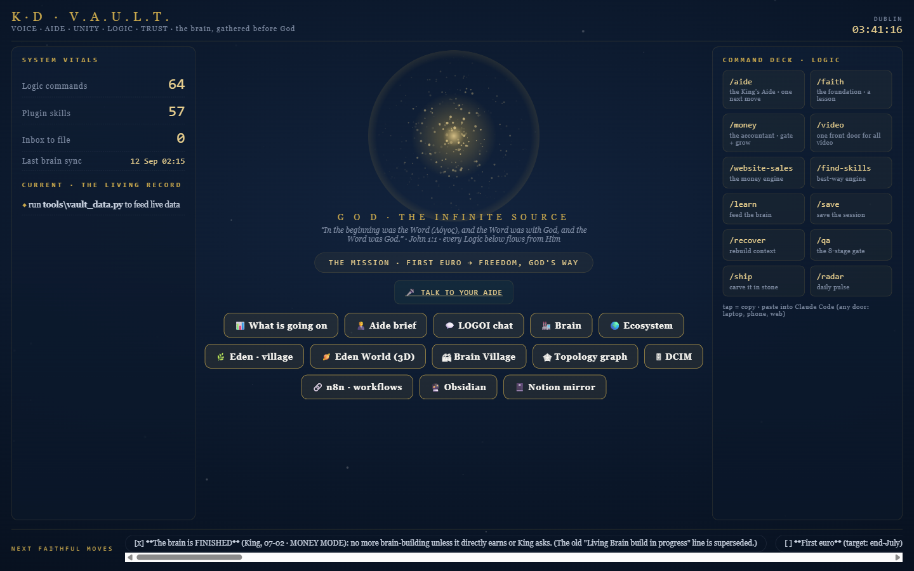
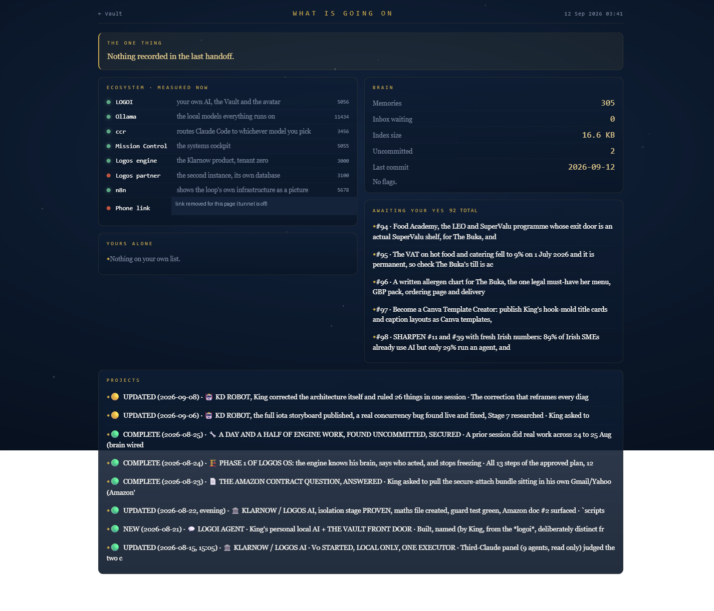

Your estate, in real pictures
What this is. Not drawings. These are screenshots of the actual running things on this laptop, taken at 03:45 on 12 September 2026, plus the real printed output of the tools that have no screen.
How to read it. Scroll. Each picture is one thing you built. The line under it says what it is and whether it is real.
Two things need your hands. The deck (Talk, your two replies, the living record) and n8n both ask for a sign in before they show anything. I will not type your token or password. Sign in on either, tell me, and I will take those two snips in a minute.
Your front door: the Vault

What is going on

The avatar: tap to talk
EDEN LIVE, the estate as a garden

The engine's door, and it says no

The doors board
THE DOORS, seen from DESKTOP-GRULS39
1. ccr code open (service up)
the everyday door: 5 of its 6 routes are PAID (OpenRouter), only background is free on the laptop, and it is the only way to put the router in front of Claude Code
2. Claude Code open [your account]
the chair. Judgement, contracts, terminal work. A plan already paid for
3. Codex open [a plan (fixed bar)]
web interfaces and hard architecture
4. Antigravity open [your account]
visual work, image mockups, a free second opinion
5. Copilot CLI open
several vendors under one login, when other bars are spent
6. Hermes absent
a free grinder pointed at the local models
7. Ollama open (service up)
the floor. Free, private, and it cannot run out
also here:
Gemini CLI open
SIGNED IN
Claude Code your account
Codex a plan (fixed bar)
Antigravity your account
GitHub signed in
CCR, THE EVERYDAY DOOR
background ollama,llama3.2:1b FREE, your own machine
default openrouter,google/gemini-3.8-flash paid
image openrouter,google/gemini-3.8-flash paid
longContext openrouter,google/gemini-3.8-flash paid
think openrouter,google/gemini-3.8-flash paid
webSearch openrouter,google/gemini-3.8-flash paid
1 free, 5 paid.
ccr records no token counts of its own, so per-call ccr spend cannot be read.
Every paid route goes through OpenRouter, so `python tools/spend_meter.py`
already includes it, mixed in with any other OpenRouter use.
WHAT CAN BE MEASURED
readable by a script: OpenRouter credit, Copilot usage (with a plan), local health
NOT readable: the Claude plan bars, Antigravity's bars, the Gemini free tier, the
OpenAI balance. For those this tool can say which door fits, never how much is left.
So: glance at the bar inside the app before a long session on a paid door.
(this tool never opens a door and never spends anything. Your hand does that.)The money meter
SPEND METER 2026-09
THE ENVELOPE, from the brain's own ruling
[..................................] USD 0.00 of 20.00, 20.00 left
BY PROVIDER, from the ledger
gemini 2 calls 133 in 56 out USD 0.0003
anthropic 1 calls 16 in 8 out USD 0.0002
openrouter 1 calls 106 in 117 out USD 0.0001
nvidia 1 calls 48 in 184 out USD 0.0000
BY LANE, which is the half a vendor bill can never tell you
live-check USD 0.0003
voice USD 0.0002
3 call(s) were written before this meter knew their price and have been
repriced from their own recorded tokens, so the ledger corrects itself.
(this tool reads and records. It never calls a model and never spends.)The health check
SERVICE PORT UP CURRENT WORKING WHY ------------------------------------------------------------------------------------------------ LOGOI 5056 yes yes yes work lane sees 98 files Ollama 11434 yes n/a NO 0 model(s) resident Logos engine 3000 yes yes yes last real model answer 763 min ago; newest e Logos partner 3100 DOWN n/a unknown no telemetry this module can read The deck 3200 yes yes unknown no telemetry this module can read ccr 3456 yes yes unknown no telemetry this module can read Mission Control 5055 yes yes unknown no telemetry this module can read n8n 5678 yes n/a unknown no telemetry this module can read NEEDS ATTENTION (2): Ollama listening but not working. 0 model(s) resident Logos partner DOWN. the second instance, its own database
The engine's own log
THE ENGINE'S OWN LOG, the newest rows (read only, from v0.sqlite3)
when world who what payload
2026-09-11 16:04:38 kd-faceless voice voice.reply {"model":"gemini-3.8-flash","tokens_in":99,"tokens_out":41,"milliseconds":3827}
2026-09-11 13:55:48 kd-faceless preverify station.finished "{\"station\":\"diagnose\",\"ok\":true}"
2026-09-11 13:55:48 kd-faceless diagnose_worker gateway.response {"mode":"local","billedTo":"operator","model":"qwen3:8b","inputTokens":3677,"outputTokens":99,"durationMs":175165,"evalM
2026-09-11 13:52:52 kd-faceless diagnose_worker gateway.call {"systemPromptSha256":"99d9cd88340722878ad391716ece061ac4296c6568a30f48bddea51ac913cb17","userPrompt":"Hook Engine, nine
2026-09-11 13:52:52 kd-faceless diagnose_worker brain.consulted {"files":["_ops/START_HERE_WINDOW.md","plans/redo-the-stage-scalable-cascade.md","_ops/REVENUE_QUEUE.md"],"count":3}
2026-09-11 13:52:51 kd-faceless preverify station.started "{\"station\":\"diagnose\"}"
2026-09-11 13:52:51 kd-faceless preverify mission.created "{\"missionId\":\"b43a09ff-92e0-4213-802a-a9277f58b919\",\"source\":\"command_bar\",\"briefChars\":126}"
2026-09-11 13:52:50 kd-faceless preverify station.finished "{\"station\":\"diagnose\",\"ok\":true}"Real today: the Vault, the dashboard, the avatar, EDEN LIVE, the doors board, the money meter, the health check and the engine's log are all running and pictured above.
Half built: the deck and n8n are up but sit behind a sign in, so they are not pictured. The second engine instance (Logos partner) is down.
Zero: Hermes, and the 3D console of Stage 7.